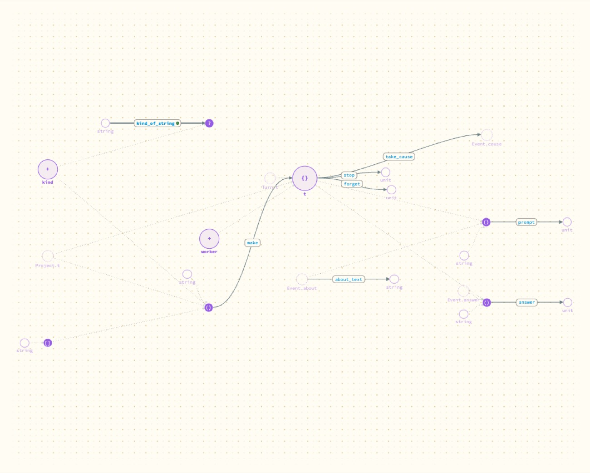
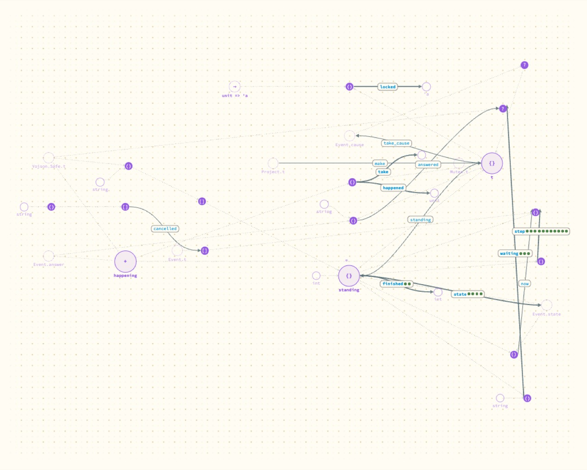
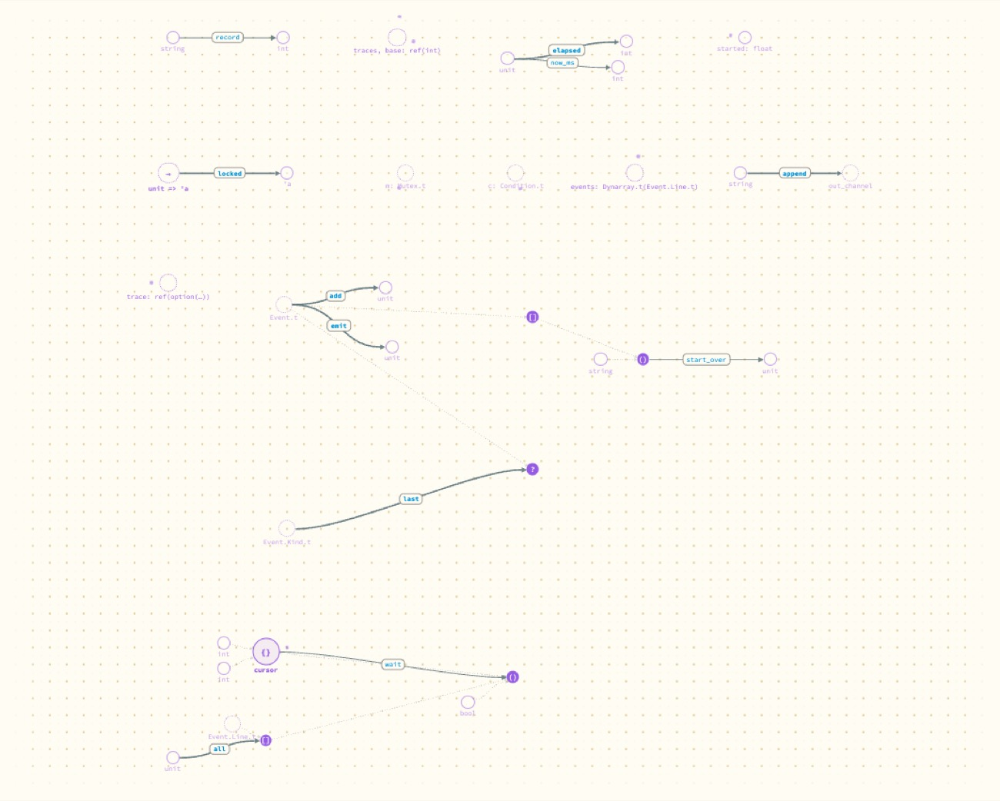

Does better-typed code draw better?
Yes for the agent module, clearly. Partly for the event bus, and only because the canvas had learned in the meantime to link a list or an option to the type inside it. The style guide was right twice and would have made the code worse three times.
- Why
Entry 1 found shapes on the canvas that meant something in the source, and they became the last table of the repository's style guide. This is the test in the other direction: follow the guide on the two worst modules and see whether the picture improves. Andrew's condition was that Portolan should not be made modular for the sake of it.
- What was done
-
A helper agent restructured the sidecar by the guide, keeping behaviour the same. Events became one variant type with their JSON written in one place. The agent module, 955 lines, was split by job into five, and "where the agent's turn stands" became a pure function from a standing and a happening to the next standing and the events to emit. The sidecar got its first tests: 95 cases.
It checked behaviour by playing the same scripted session before and after each step and comparing the traces, and by two short turns with the real agent. I took the pictures below on the merged build.
What happened



standing and happening, and step between them carries a row of test pips.

add, emit, last and start_over meet at Event.t; all and wait at the stored line. Four helpers remain islands, and the module's state is still six loose values.The fan into unit did not vanish. It moved to the module that runs the Claude Code process, which is where effects belong.
The bus picture only improved because of a canvas change made the same day (entry 4): a list or option of a type is now linked to that type. On the branch where the restructuring was done, without that change, the bus was better code and almost the same picture.
A third thing showed up: the canvas draws the types the compiler infers. Functions that build JSON drew as a scatter of anonymous types until their results were annotated, and then they met at one node.
What the guide got right and wrong
| Verdict | Rule, and what happened |
|---|---|
| Helped | "A state is a variant" with "effects at the rim" produced Turn.step, the best single result. "Parse at the edge" produced the event and protocol modules. |
| Silent | Tests need a library, so an executable should be a thin file over one. Data that is only passed along may stay as it arrived. Annotate what builds JSON, so readers and the canvas see a name. Who owns a lock after a split. |
| Would have made it worse | A type for permission patterns: eight conversions and no rule to keep. Pending requests kept inside a "waiting" constructor: a prompt arriving during a wait would lose them. A bus value threaded through every function, where there is one bus per process. |
- What it means
The picture and the code quality move together where the guide is about types and state, which is most of it. They come apart where a module is a process-wide service: the bus is fine as it is, and still looks like scattered values.
- Next
The guide has been changed to say what this found. The doubled graph record (the last shape in entry 1) is being fixed the same way; its result will be added here.